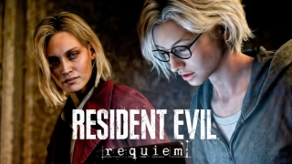

Resident Evil Requiem — это грядущая игра в жанре survival horror, разработанная и изданная компанией Capcom . Это девятая основная игра в серии Resident Evil после Resident Evil Village (2021). В ней представлен новый главный герой, аналитик ФБР Грейс Эшкрофт, которая расследует остатки Ракун-Сити с помощью федерального агента Леона С. Кеннеди.

Игроки переключаются между Грейс и Леоном, у которых разные игровые механики. Миссии с участием Грейс выполнены в стиле survival horror, как в таких играх, как Resident Evil 2 (2019), Resident Evil 7: Biohazard (2017) и Resident Evil Village , и включают в себя её попытки избежать обнаружения главным антагонистом Виктором Гидеоном и монстрами в отеле. Миссии Леона основаны на сражениях, как в играх вроде Resident Evil 4 (2023).
В июле 2024 года был анонсирован новый проект Resident Evil , режиссером которого станет Коши Наканиси, ранее работавший над Resident Evil 7: Biohazard . Игра Resident Evil Requiem была представлена Capcom на Summer Game Fest 2025 в июне того же года. Она приурочена к 30-летию серии и возвращает нас к основной сюжетной линии, разворачивающейся между инцидентом в Раккун-Сити и деятельностью корпорации Umbrella , о которой мы в последний раз слышали в Resident Evil 6 (2012). Релиз Resident Evil Requiem запланирован на 27 февраля 2026 года для Nintendo Switch 2 , PlayStation 5 , Windows и Xbox Series X/S .
На главную страницу